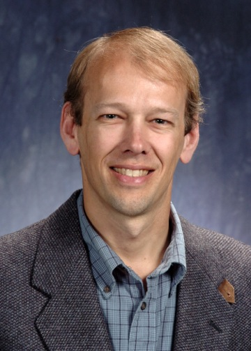
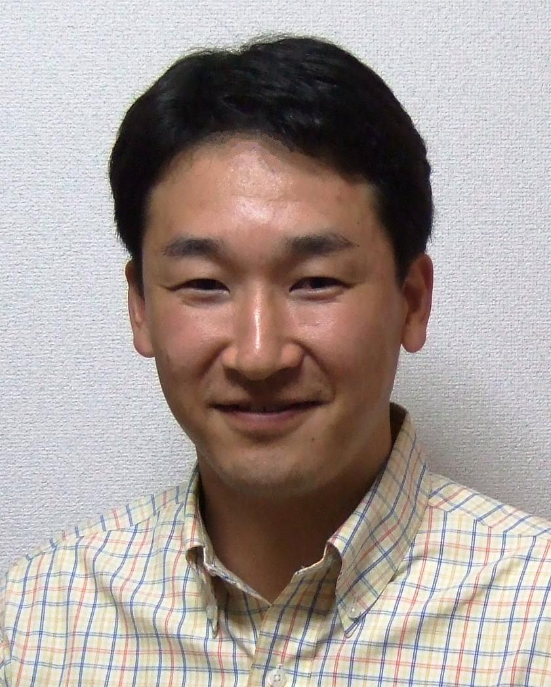

SACSIS 2013 プログラム
基調講演・招待講演・チュートリアル情報
- 基調講演
- 5/22(水) 13:30-15:00：
大学共同利用機関法人 情報・システム研究機構 国立情報学研究所長
喜連川 優 氏
「ビッグデータが作り出す新たな世界」
２０１２年３月末のホワイトハウスからのビッグデータ施策に関する発表以来、ビッグデータというキーワードは広く取り上げられるに至っている。その底流について述べるとともに米国の研究動向について報告する。加えて、ビッグデータなるアンブレラの下で生み出されつつある興味深い応用について時間の許す限り紹介したい。又、講演者が中心研究者を務める内閣府最先端研究開発支援プログラム（ＦＩＲＳＴ）についても紹介する。
- 5/22(水) 13:30-15:00：
- 招待講演
- 5/23(木) 13:30-15:30：
 Argonne National Laboratory
Pete Beckman 氏
「The New Supercomputer Revolution」
Forty years ago only a handful of scientists were using supercomputers for advanced calculations.Today, large scientific computing clusters are everywhere -- from small colleges to large universities, global businesses, and research laboratories. Two main factors explain why supercomputers have become so widespread: a stable message-passing programming model and a largely open source software stack that effectively leverages community development. The stable programming model and the constantly improving software stack have allowed for sustained investments in complex simulation codes. Code teams have devised new algorithms and increased the performance and scalability of their applications, leading to realistic modeling and prediction of complex phenomena. As we look forward into the next 20 years, we see dramatic changes on the horizon. The basic technology for computing systems is changing. CPU clock frequencies are no longer increasing. Instead, parallelism within a CPU is multiplying every year. Today's CPUs designed for high-performance computing have 50 or more parallel threads of control, and we expect tomorrow's CPUs to support thousands of such threads. Furthermore, architectures seem to be diverging, dividing the once cohesive software stack. Power efficiency is now a key concern. All these changes mean that we will need to develop new programming models, new architectures, and a new software stack that can respond dynamically to system power.
- 5/23(木) 13:30-15:30：
- チュートリアル:
- チュートリアル1
5/23(木) 10:45-12:15：
 京都大学
石原 亨 准教授
「コンピュータシステムのためのエナジーハーベスティング技術」
太陽光や振動あるいは熱などの自然エネルギーを電気エネルギーとして取り込む“エナジーハーベスティング” 技術が注目を集めている。化石燃料の消費を減らすことが期待できるだけでなく、電源がないところでも電気を利用できることが大きな理由である。特にコンピュータシステムの観点では、いつでもどこでも電気が利用できるという性質は、サイバーフィジカルシステムを構築する上で非常に大きな意味を持つ。自然エネルギーによる発電量は、環境に大きく左右されるため、エネルギーの貯蔵庫となる“エナジーストレージ”が必須である。エナジーストレージにはリチウムイオンバッテリなどの２次電池やスーパーキャパシタなどの大容量キャパシタがある。これらのストレージは、種類に よって容量単価や出力電流密度およびリーク電流や充電効率などに違いがあるため、コンピュータシステムのメモリ階層と類似した階層構造でエナジーストレージシステムを構築する技術が提案されている。エナジーハーベスティングの過程では、環境から取り入れたエネルギーを、効率良くエナジーストレージに蓄え、そこから効率良く取り出して利用する技術が重要である。本チュートリアルでは、コンピュータシステムにおけるメモリ階層とエナジーストレージの階層構造を対比しながら、コンピュータシステムのための高効率エナジーハーベスティング技術と自然エネルギーの高効率利用技術を概説する。
- チュートリアル2
5/24(金) 10:45-12:15：
株式会社Preferred Infrastructure
岡野原 大輔 氏
「機械学習の理論と実践」
データからルールや知識を自動的に獲得できる機械学習は、大規模データが入手可能となったあらゆる分野で使われる協力な道具となってきた。本講演では初めに現在の機械学習を俯瞰し、基本的な概念や問題設定、代表的な手法、使用時のベストプラクティスについて解説する。次に機械学習の中でも現在、重要となっているオンライン機械学習、並列分散機械学習を紹介し、それらを実現しているリアルタイム解析基盤であるJubatusについて解説する。最後に最近驚異的な性能を示しているDeep Learningなど、これからの機械学習の展望を述べ、どのような研究の可能性があるのかについて述べる。
- チュートリアル1
- 日本電気株式会社
- ローグウェーブソフトウェアジャパン株式会社
- DataDirect Networks Japan
- 株式会社 日立製作所/li>
- 一般財団法人高度情報科学技術研究機構
- 株式会社ＨＰＣテック
- 東京工業大学 学術国際情報センター
- 日本Ｇ−ＤＥＰ エルザジャパン
- Cray Japan Inc.
- ＳＣＳＫ株式会社
- 東北大学サイバーサイエンスセンター
- 東亜電気工業株式会社
- 株式会社データダイレクト・ネットワークス・ジャパン
セッション構成
| 2013年5月22日(水) | |||||
|---|---|---|---|---|---|
| 時間 | 第一会場（橘） | 第二会場（萩） | 第三会場（桜） | ||
| 13:15-13:30 | 開会の辞 最優秀論文賞、優秀若手研究賞表彰 |
13:00-18:00 企業・団体展示 |
|||
| 13:30-15:00 | 基調講演 喜連川 優 （国立情報学研究所） 「ビッグデータが作り出す新たな世界」 (座長: 工藤 知宏 (産業技術総合研究所)) |
||||
| 15:15-16:45 | [1-A] マイクロアーキテクチャ |
[1-B] アルゴリズム |
|||
| 17:00-18:00 | [2-A] セキュリティ |
[2-B] キャッシュとメモリ |
|||
| 2013年5月23日(木) | |||||
| 時間 | 第一会場（橘） | 第二会場（萩） | 第三会場（桜） | ||
| 9:30-10:30 | [3-A] マルチコア・メニーコアＩ |
[3-B] 並列分散処理 |
9:30-16:30 企業・団体展示 |
||
| 10:45-12:15 | チュートリアル1 石原 亨 (京都大学) 「コンピュータシステムのためのエナジーハーベスティング技術」 | ||||
| 13:30-15:00 | 招待講演 Pete Beckman (Argonne National Laboratory) 「The New Supercomputer Revolution」 (座長: 朴 泰祐 (筑波大学)) |
||||
| 15:15-16:30 | ポスターインデキシング | ||||
| 16:30-18:00 | ポスターセッション・企業展示 | ||||
| 2013年5月24日(金) | |||||
| 時間 | 第一会場（橘） | 第二会場（萩） | 第三会場（桜） | ||
| 9:30-10:30 | [4-A] HPCシステムと性能評価 |
[4-B] マルチコア・メニーコアＩＩ |
|||
| 10:45-12:15 | チュートリアル2 岡野原 大輔 （株式会社Preferred Infrastructure） 「機械学習の理論と実践」 | ||||
| 13:30-15:00 | [5-A] リコンフィギャラブルコンピューティング |
[5-B] システムの運用，管理 |
|||
| 15:00-15:30 | SACSISの今後について |
||||
| 15:30-15:40 | 閉会の辞 優秀ポスター賞表彰 |
||||
プログラム
(注) * は萌芽論文5/22(水) 13:15∼18:00
13:15∼13:30
- オープニング
- 開会の辞
- 最優秀論文賞、優秀若手研究賞表彰
13:30∼15:00
- 基調講演 (座長：工藤 知宏(産業技術総合研究所))
- ビッグデータが作り出す新たな世界
喜連川 優（国立情報学研究所）
- ビッグデータが作り出す新たな世界
15:15∼16:45
- セッション[1-A]: マイクロアーキテクチャ（座長：三輪 忍 (東京大学)）
- タグの2段階比較による発行キューの消費エネルギー削減
小林 誠弥, 塩谷 亮太, 安藤 秀樹 (名古屋大学) - タイミング・フォールト耐性を持つOut-of-Order プロセッサの検出/回復方式
吉田 宗史, 倉田 成己 (東京大学), 塩谷 亮太(名古屋大学), 五島 正裕, 坂井 修一 (東京大学) - 資源リサイジングとクロック周波数ブーストを適応的に切り替えるデュアルターボブースト
山口 恭平, 塩谷 亮太, 安藤 秀樹 (名古屋大学)
- タグの2段階比較による発行キューの消費エネルギー削減
- セッション[1-B]: アルゴリズム （座長：住元 真司 (富士通研究所)）
- *文字列検索における圧縮インデックス構築の省メモリな並列化手法の提案
林 伸也, 田浦 健次朗 (東京大学) - *タスク並列処理系におけるCPUの利用効率に着目したスケジューリング手法
大筒 裕之, 中島 潤, 田浦 健次朗 (東京大学) - 10000タスクに対応するタスク配置手法SFMOPTの提案と評価
浅野 悠, 吉瀬 謙二 (東京工業大学)
- *文字列検索における圧縮インデックス構築の省メモリな並列化手法の提案
17:00∼18:00
- セッション[2-A]: セキュリティ （座長：中田 秀基(産業技術総合研究所)）
- *無害のバグを大量に含ませるプログラム難読化
大山 恵弘, 甲斐 朋希, 中村 燎太 (電気通信大学) - *仮想マシンモニタによるパスワードクラッキング検出
三浦 俊朗, 本田 惇, 高橋 一志, 大山 恵弘 (電気通信大学)
- *無害のバグを大量に含ませるプログラム難読化
- セッション[2-B]: キャッシュとメモリ （座長：佐藤 幸紀 (北陸先端科学技術大学院大学)）
- 一致経路長の短縮によるRenamed Trace Cache のエネルギー効率向上
塩谷 亮太, 安藤 秀樹 (名古屋大学) - *命令グループごとのキャッシュ・パーティショニング
浅見 公輔, 倉田 成己 (東京大学), 塩谷 亮太 (名古屋大学), 五島 正裕, 坂井 修一 (東京大学)
- 一致経路長の短縮によるRenamed Trace Cache のエネルギー効率向上
5/23(木) 09:30∼18:30
09:30∼10:30
- セッション[3-A]: マルチコア・メニーコアI (座長：鳥居 淳(トプスシステムズ))
- マルチコア・プロセッサ向けのヘルパースレッドによるキャッシュ制御支援手法の提案
橋本 崇浩, 近藤 正章, 和田 康孝, 本多 弘樹 (電気通信大学) - *メニーコアプロセッサにおける実時間モデル予測制御のための投機実行法
川上 哲志, 岩永 明人, 井上 弘士 (九州大学)
- マルチコア・プロセッサ向けのヘルパースレッドによるキャッシュ制御支援手法の提案
- セッション[3-B]: 並列分散処理 (座長：大島 聡史(東京大学))
- *データアフィニティを考慮したCassandraによる並列分散処理の実装と評価
菱沼 直子 (お茶の水女子大学）, 竹房 あつ子, 中田 秀基 (産業技術総合研究所), 小口 正人 (お茶の水女子大学） - MapReduce を用いたグラフアプリケーションにおける重複メッセージの排除による高速化
黒松 信行, 置田 真生, 萩原 兼一 (大阪大学)
- *データアフィニティを考慮したCassandraによる並列分散処理の実装と評価
10:45∼12:15
- チュートリアル1 (座長: 近藤 正章 (電気通信大学))
- 機械学習の理論と実践
岡野原 大輔 （株式会社Preferred Infrastructure）
- 機械学習の理論と実践
13:30∼15:00
- 招待講演 (座長: 朴 泰祐 (筑波大学))
- The New Supercomputer Revolution
Pete Beckman (Argonne National Laboratory)
- The New Supercomputer Revolution
15:15∼16:30
16:30∼18:00
- ポスターセッション
- 三次元ワイヤレス積層によるヘテロジニアスマルチコアプロセッサとシステムソフトウェアの実現
坂本 龍一，高橋 昭宏，小林 弘明，佐藤 未来子（東京農工大学），天野 英晴（慶應義塾大学），宇佐美 公良（芝浦工業大学），黒田 忠広（慶應義塾大学），近藤 正章（電気通信大学），中村 宏（東京大学），三浦 典之（慶應義塾大学），並木 美太郎（東京農工大学） - 大規模環境を想定した階層型ワークフロー処理系の効率的な通信方式
仲 貴幸，増田 嵩，松本 真樹，大野 和彦（三重大学） - ビッグデータ向け高信頼NANDフラッシュメモリ/ReRAM統合ストレージ
田中丸 周平（中央大学／東京大学），土井 雅史，竹内 健（中央大学） - 最新プロセッサのSIMD演算を活用する並列化ガウス＝ザイデルスムーザの実装方法
河合 直聡，岩下 武史，中島 浩（京都大学） - 多数の動画像を対象とするリアルタイム異常値検出にむけて
小川 宏高，中田 秀基，工藤 知宏（産業技術総合研究所） - レゾルベントの線形結合をフィルタに用いたHermite対称定値一般固有値問題のフィルタ対角化法
村上 弘（首都大学東京） - GfarmファイルシステムへのCooperative Cachingの実装
佐々木 慎（電気通信大学），大山 恵弘（電気通信大学／科学技術振興機構） - レイテンシコアの高度化・高効率化による将来のHPCIシステムに関する調査研究におけるアプリケーションの最適化と複数の計算機環境での性能評価
大島 聡史，片桐 孝洋，中島 研吾（東京大学），米村 崇，熊洞 宏樹，樋口 清隆，橋本 昌人，高山 恒一（日立製作所），藤堂 眞治，岩田 潤一，内田 和之，佐藤 正樹，羽角 博康（東京大学），黒木 聖夫（海洋研究開発機構） - Parallel POD Compression Accelerated by Binary-Swap Compositing
Chongke Bi, Kenji Ono (RIKEN) - InfiniBandを用いた遠隔メモリアクセスの性能
岩井田 匡俊，鈴木 悠一郎，緑川 博子（成蹊大学／科学技術振興機構） - CUDA Enabled for Android Tablets through DS-CUDA
Edgar Josafat Martinez-Noriega (The University of Electro-Communications), Atsushi Kawai (Keio University), Kazuyuki Yoshikawa (The University of Electro-Communications), Kenji Yasuoka (Keio University), Tetsu Narumi (The University of Electro-Communications)
- High Performance and Energy-efficient Hybrid ReRAM/MLC NAND Flash SSD with Intelligent Data Management Algorithm
Chao Sun (Chuo University/University of Tokyo), Hiroki Fujii (University of Tokyo), Kousuke Miyaji, Koh Johguchi (Chuo University), Kazuhide Higuchi (University of Tokyo), Ken Takeuchi (Chuo University) - LMNtal処理系SLIMのマルチスレッド化による最短経路問題のデータ並列求解
青山 龍一，上田 和紀（早稲田大学） - ネストしたVMを用いた仮想化システムの高速メンテナンス
大庭 裕貴（九州工業大学），光来 健一（九州工業大学／CREST） - スーパーコンピュータ「京」におけるメモリインテンシブなアプリケーションの評価および高性能化
井上 俊介（理化学研究所），堤 重信（富士通九州システムズ），前田 拓人（東京大学），南 一生（理化学研究所） - シェアードメモリを利用したGPGPU処理系の自動最適化機構
丸山 剛寛，神谷 智晴，松本 真樹，大野 和彦（三重大学） - Xeon(R) Phi(TM)のGather命令とHMC内のGatherの差異
冨森 苑子（奈良女子大学），田邊 昇（東芝），高田 雅美，城 和貴（奈良女子大学） - WebGLを用いた対話型遠隔シミュレーションシステムのマルチクライアント対応
荒川 文貴，辺見 良太，福間 慎治，森 眞一郎（福井大学） - 不揮発性メモリを用いたGraph500ベンチマークの大規模実行へ向けた予備評価
岩渕 圭太，佐藤 仁（東京工業大学／JST），安井 雄一郎（中央大学），藤澤 克樹（中央大学／JST），松岡 聡（東京工業大学） - 京における密行列固有値ソルバEigen-Kの性能評価と性能モデリング
深谷 猛（神戸大学／科学技術振興機構），今村 俊幸（理化学研究所／科学技術振興機構），山本 有作（神戸大学／科学技術振興機構） - DS-CUDAを用いたGPGPUの信頼性向上システム
吉川 和幸，Edgar Josafat Martinez-Noriega（電気通信大学），川井 敦，泰岡 顕治（慶應義塾大学），成見 哲（電気通信大学） - マルチノード・マルチスレッドプログラム向け並列ランタイムシステムの設計
鈴木 悠一郎，岩井田 匡俊，緑川 博子，甲斐 宗徳（成蹊大学／科学技術振興機構） - MPI向け動的メモリ割当分析ツール(DMATP-MPI)
秋元 秀行，安島 雄一郎（富士通／科学技術振興機構），安達 知也（富士通），岡本 高幸，三浦 健一，住元 真司（富士通／科学技術振興機構） - 大規模シミュレーションにおけるインコア型ストレージの概念の提案
尾西 翔平（首都大学東京），橋川 伸吾（エルザジャパン），鈴木 敬久（首都大学東京） - CellSQL: 大規模データ処理のための表計算ソフトウェア
菊地 悠平，田浦 健次朗（東京大学） - 動的タイム・ボローイングを可能にするクロッキング方式の適用手法の予備評価
広畑 壮一郎，神原 太郎，吉田 宗史，倉田 成己，五島 正裕，坂井 修一（東京大学） - Fortranトランスレータを生成するコンパイラ・コンパイラの試作
岩下 英俊（富士通研究所） - 電力モード協調によるプロセッサと主記憶の省電力化の検討
宮部 創一，近藤 正章，和田 康孝，本多 弘樹（電気通信大学） - A Performance Analyzer for Task Parallel Applications based-on Execution Time Stretches
An Huynh, Jun Nakashima, Kenjiro Taura (The University of Tokyo)
- 三次元ワイヤレス積層によるヘテロジニアスマルチコアプロセッサとシステムソフトウェアの実現
18:00∼20:00
- 懇親会
第三会場 桜
5/24(金) 9:30∼15:40
9:30∼10:30
- セッション[4-A]: HPCシステムと性能評価 (座長：岩下 武史 (京都大学))
- Tightly Coupled Acceleratorsアーキテクチャに基づくGPUクラスタの構築
塙 敏博, 児玉 祐悦, 朴 泰祐, 佐藤 三久 (筑波大学) - *疎行列のキャッシュ適合性に基づくGraph500ベンチマークの特性解析
田邊 昇 (東芝), 冨森 苑子, 高田 雅美, 城 和貴 (奈良女子大学)
- Tightly Coupled Acceleratorsアーキテクチャに基づくGPUクラスタの構築
- セッション[4-B]: マルチコア・メニーコアII (座長：松谷 宏紀 (慶應義塾大学)）
- アドレス情報を利用した並列度の局所的な低減によるハードウェアトランザクショナルメモリの高速化
橋本 高志良, 江藤 正通, 堀場 匠一朗, 津邑 公暁, 松尾 啓志 (名古屋工業大学) - ネットワークオンチップにおける仮想チャネル利用法の再考と評価
笹河 良介, 藤枝 直輝, 高前田(山崎) 伸也, 吉瀬 謙二 (東京工業大学)
- アドレス情報を利用した並列度の局所的な低減によるハードウェアトランザクショナルメモリの高速化
10:45∼12:15
- チュートリアル2 (座長: 谷口一徹(立命館大学))
- コンピュータシステムのためのエナジーハーベスティング技術
石原 亨 (京都大学)
- コンピュータシステムのためのエナジーハーベスティング技術
13:30∼15:00
- セッション[5-A]: リコンフィギャラブルコンピューティング (座長：柴村 英智 (ISIT))
- 多数の小容量FPGAを用いたスケーラブルなステンシル計算機の開発
小林 諒平, 高前田（山崎） 伸也, 吉瀬 謙二 (東京工業大学) - 世界最小ソフトプロセッサの設計と実装
田中 雄一郎, 笹河 良介, 吉瀬 謙二 (東京工業大学) - 低消費電力プロセッサのための限定的動的再構成アーキテクチャの提案
平尾 岳志, 安達 琢, 浅井 哲也, 本村 真人 (北海道大学)
- 多数の小容量FPGAを用いたスケーラブルなステンシル計算機の開発
- セッション[5-B]: システムの運用，管理(座長：建部 修見 (筑波大学))
- ディスクエリアネットワークを用いたオブジェクトストレージの高速なデータ復旧手法
小西 洋太郎, 小野 貴継, 三吉 貴史 (富士通研究所) - *Hadoop のノード脱退時および削除時のレプリカ生成の高速化
日開 朝美 (お茶の水女子大学), 竹房 あつ子, 中田 秀基 (産業技術総合研究所), 小口 正人 (お茶の水女子大学) - 電力を考慮したアプリケーション構築のための計算機システムの提案
横山 大作 (東京大学), 喜連川 優 (国立情報学研究所、東京大学)
- ディスクエリアネットワークを用いたオブジェクトストレージの高速なデータ復旧手法
15:00∼15:30
15:30∼15:40
- クロージング
- 閉会の辞
- 優秀ポスター賞表彰